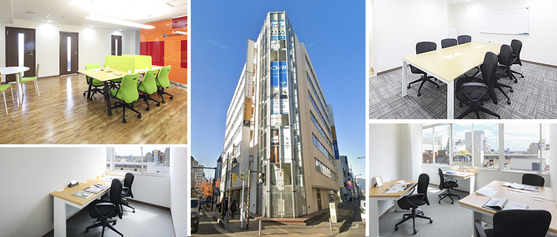
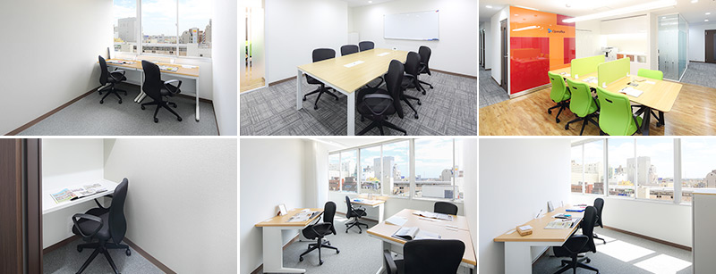

本厚木駅前のレンタルオフィス｜Openoffice：東京・大阪をはじめ全国に50拠点以上
- 【個室レンタルオフィス】オープンオフィス HOME
- オープンオフィス本厚木駅前
【個室レンタルオフィス】オープンオフィス 本厚木駅前
オープンオフィス本厚木駅前センターは、小田急線「本厚木」駅の北口から徒歩１分、サクセス本厚木駅前ビルの5階・6階に位置します。本厚木エリアには、大手電気メーカーの開発センターや大手企業の研究施設が拠点を構えており、本厚木駅周辺には、その関連会社や出入り業者のオフィスが集中しています。隣接する工業地域の相模原地区や湘南地区を活動エリアとする企業の支店・営業所としても人気のロケーションです。

オープンオフィス本厚木駅前周辺のMap
オープンオフィス本厚木駅前の住所・アクセス
住所:
神奈川県厚木市中町4-14-1 サクセス本厚木駅前ビル5、6F空港からのアクセス:
羽田空港よりリムジンバスで「本厚木駅前駅北口」まで約70分成田空港よりリムジンバスで「本厚木駅前駅北口」まで約150分
電車からのアクセス:
小田急線「本厚木」駅北口より徒歩1分お車でのアクセス：
小田急線「本厚木」駅北口ロータリー至近オープンオフィス本厚木駅前の特長
- 首都圏のハブとなる都市、本厚木駅前
- 大手企業の研究施設が集中
- 支店・営業所としても最適なロケーション
- 本厚木駅前の好立地
- 働き方改革用サテライトオフィスにも最適

オープンオフィス本厚木駅前のフロアマップ


※フロア内は禁煙です。
※こちらはイメージ図となりますので、状況が異なる場合は現況を優先させていただきます。
| ◆初回納入金 | 利用料1ヶ月分の保証金 |
|---|---|
| ◆共益費 | 水道光熱費、ビル共益費、ゴミ出し、フロア・トイレの清掃、共有部分の消耗品代を含みます。 |
オープンオフィス本厚木駅前が提供するオフィスサービス
-

高速インターネット
-

カラーレーザーコピー
専用のカードでコピーが出来ます -

ICカードキー
セキュリティを向上させています -

ミーティングルーム
インターネットで予約していただけます -

Wi-Fi完備

ネットワークプリンタ・スキャナ部屋のパソコンで操作できます
オープンオフィス本厚木駅前近隣のスポット
銀行
みずほ銀行 厚木支店
三井住友銀行 厚木支店
横浜銀行 厚木支店
三菱東京UFJ銀行 本厚木駅前支店
レストラン
中ちょう倶楽部 （フレンチ）
一茎庵 （懐石料理）
寿司房州 （寿司）
じょ里ぃ （ステーキ）
ホテル
レンブランドホテル厚木
ホテル東海
ホテルビスタ厚木
厚木アーバンホテル
レジャー
コナミスポーツクラブ厚木
東急スポーツオアシス本厚木駅前店
映画館・エンターテイメント
アミューあつぎ映画.comシネマ
リージャスグループのご案内
リージャス・グループは、柔軟なワークスペースを提供する世界最大の企業です。そのネットワークは世界120カ国1,100都市、3300拠点に及びます。会員数は250万人で、業界で成功を収める大小様々な企業や起業家の方々にご利用いただいています。
リージャスは、個室タイプのレンタルオフィス、コワーキングスペースなど多彩なオフィスプラン、近年需要が高まるモバイルワークやバーチャルオフィス、障害復旧サービスの提供を通じ、お客様が予算やワークスタイルに合わせて仕事を行うことができる環境を提供いたします。